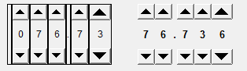

Thumb Wheel
A widget that can be used to read or write a numeric PV on every digit bit.

Operations
At runtime, clicking arrow buttons to increase/decrease value on corresponding digit bit.
At runtime, up and down arrow keys can be also used to increase/decrease value. First, click the digit big that you want to change.
The focused digit big is indicated by Focused Frame Color. Then, press up or down key to change the value on
the focused digit bit. Left and right arrow keys can be used to move the focus.
Special Properties
- Show Buttons (show_buttons)
- Show or hide arrow buttons.
- Minimum (minimum)
- Lower limit of the widget.
- Maximum (maximum)
- Upper limit of the widget.
- Integer Digits(integerDigits)
- Number of the integer digits.
- Decimal Digits (decimalDigits)
- Number of the decimal digits.
- Internal Frame Color (internalFrameColor)
- Color of the internal frame.
- Focused Frame Color (focusedFrameColor)
- Color of the internal focused frame.
- Internal Frame Thickness (internalFrameSize)
- Thickness of the internal frame.
See Also